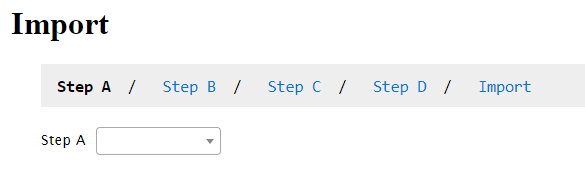
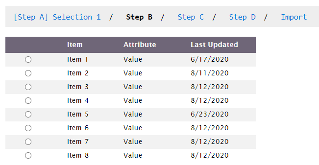
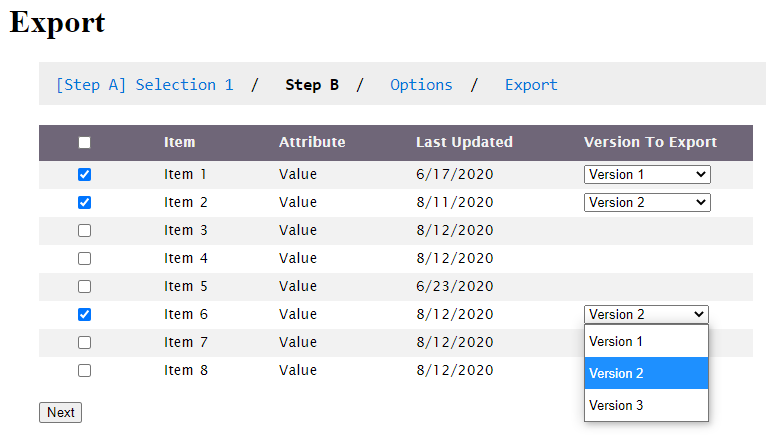
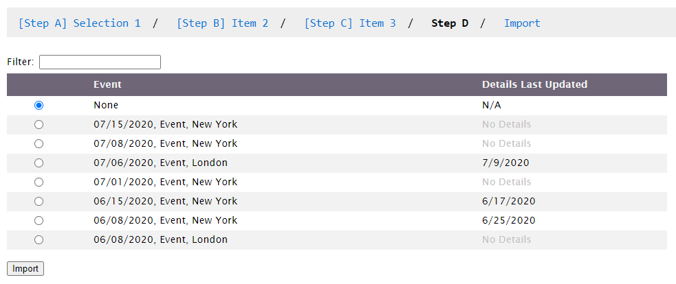
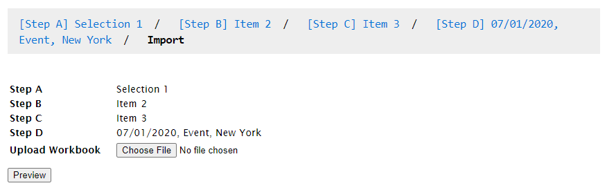

August 2020
Another site I work on, a Ruby on Rails application, is mostly used to import and export data to and from excel workbooks. Both importing and exporting require the user to first make several selections, to make sure data will be saved in or retrieved from the correct location. My job was to redesign this multi-step process and give it a new appearance.

The element that ties the steps together is this breadcrumb, which allows you to navigate the steps and go back if necessary.

Step 2 of the Import GUI

This step looks a bit different between Import and Export because users can choose to export from multiple sources.

This step looks like the others in that the choices appear in a table, but it actually uses the DataTables plugin with a very bare stylesheet to maintain the simple, minimal aesthetic of the other tables.

Confirmation page - review selections and upload file